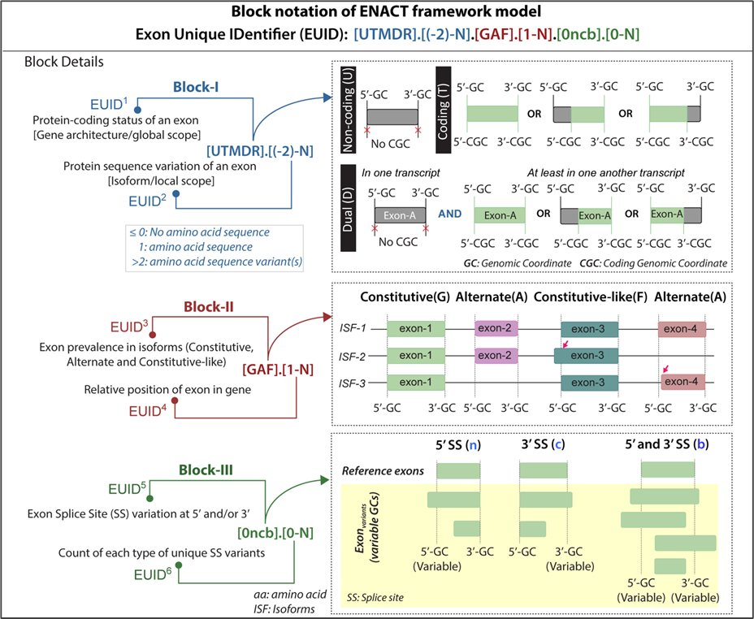

ENACT and ENACTdb · 2019–2025
Exon nomenclature and classification of transcripts
ENACT combines exon positions and protein-coding sequences in a gene-wide classification. It records coding status, inclusion across isoforms and splice-site variation, including overlapping changes that are difficult to interpret from exon boundaries alone.
I developed the framework to classify exon attributes across transcripts and distinguish changes in coding regions, splice sites and amino-acid sequences. An exon can alternate between coding and noncoding states or contribute different amino-acid sequences in different transcripts; ENACT keeps these cases explicit.
ENACTdb displays exon variation alongside coding sequences, protein domains, predicted secondary structure and disordered regions, allowing individual transcript differences to be examined in their protein context.
- Annotated protein-coding genes across C. elegans, D. melanogaster, D. rerio, M. musculus, and H. sapiens.
- Exon classes retain coding status, amino-acid changes and splice-site shifts alongside domains, disordered regions, motifs and other protein annotations.
- Published the framework in Genome Research and the database in Bioinformatics Advances.
